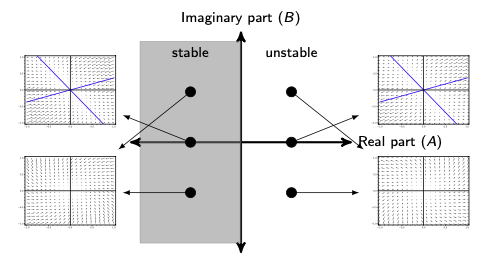
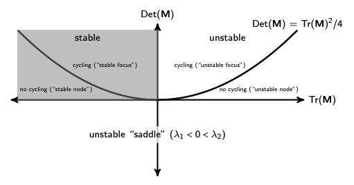
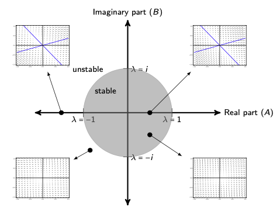
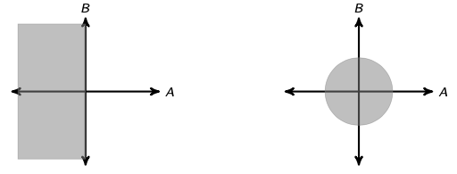

Lecture 12: Equilibria and stability (linear multivariate)
Lecture overview
1. Linear multivariate models
Here, we'll begin to use linear algebra to analyze linear multivariate models.
To keep the visuals simple, we'll look at the general \(2\times2\) case, but the same techniques hold for any dimension.
A \(2\times2\) linear multivariate model in continuous time can be written as
In matrix notation
2. Equilibria
The equilibria of this model, \(\hat{\vec{n}}\), are found as in the univariate case
Linear models
If \(\mathbf{M}\) is invertible
This is reminiscent to our univariate model of exponential growth \(\frac{\mathrm{d}n}{\mathrm{d}t}=rn \implies \hat{n}=0\) provided \(r\neq0\).
If \(\mathbf{M}\) is non-invertible (singular, ie \(\mathbf{M}\) has a determinant of 0), then there is an infinite number of equilibria.
To see this notice that if
then as long as \(n_2 = (-a/b)n_1\) we are at equilibrium, regardless the value of \(n_1\).
Note that this is the case where the two null clines lie exactly on top of one another. This is reminiscent of exponential growth \(\frac{\mathrm{d}n}{\mathrm{d}t}=rn\) with \(r=0\).
Affine models
Now what if we have a multivariate affine model?
Well the equilibria of this model, \(\hat{\vec{n}}\), are also found as in the univariate case
If \(\mathbf{M}\) is invertible (otherwise there are no equilibria or an infinite number)
This is reminiscent to our univariate model of exponential growth with migration \(\frac{\mathrm{d}n}{\mathrm{d}t}=rn+m \implies \hat{n}=-m/r\) provided \(r\neq0\).
Fortunately we can convert affine models into linear models with a transformation \(\vec{n} \rightarrow \vec{\delta} = \vec{n} - \hat{\vec{n}}\)
3. Stability
Real-valued eigenvalues
To consider stability recall the definition of the eigenvalues and eigenvectors
Combining this with
we see that
i.e., once the system reaches an eigenvector, \(\vec{n}=\vec{v}\), it will remain on that eigenvector forever and change in magnitude with rate \(\lambda\).
The system can therefore only be stable when movement along each eigenvector approaches the equilibrium, i.e, all \(\lambda<0\).
import sympy
import numpy as np
import matplotlib.pyplot as plt
# Write out vector field plotting function (see Lecture 6)
def plot_vector_field(dn1, dn2, xlim=(0,1200), ylim=(0,1200), n_steps=25, width=8, height=6, show=False, axes_labels=[None, None], ax=None):
# Set x and y ranges
xrange, yrange = np.linspace(xlim[0], xlim[1], n_steps), np.linspace(ylim[0], ylim[1], n_steps)
# Initialize 2D grid with x,y values and additional grids to track derivatives
X, Y = np.meshgrid(xrange, yrange)
U, V = np.zeros(X.shape), np.zeros(Y.shape)
# Compute the gradient at each x,y position
for i in range(len(xrange)):
for j in range(len(xrange)):
U[i,j] = sympy.lambdify((n1, n2), dn1)(X[i,j], Y[i,j])
V[i,j] = sympy.lambdify((n1, n2), dn2)(X[i,j], Y[i,j])
# Plot figure
if ax is None:
fig, ax = plt.subplots()
fig.set_size_inches(width, height)
ax.set_xlabel(axes_labels[0])
ax.set_ylabel(axes_labels[1])
ax.quiver(X,Y,U,V, linewidth=1)
if show == True:
plt.show()
else:
return ax
# Initialize matrices
M1, M2, M3 = (
sympy.Matrix([[2,1],[1/2,1]]),
sympy.Matrix([[-2,-1],[1/2,1]]),
sympy.Matrix([[-2,-1],[-1/2,-1]])
)
# Initialize vector of variables
n1, n2 = sympy.symbols('n1, n2')
n = sympy.Matrix([n1, n2])
# Plot data
fig, ax = plt.subplots(1, 3)
fig.set_size_inches(14, 4)
for i, M in enumerate([M1, M2, M3]):
# Compute derivatives
dn = M * n
# Plot vector field
plot_vector_field(*dn, xlim=(-1,1),ylim=(-1,1), ax=ax[i])
# Get eigenvectors and make functions for plotting
r1, r2 = np.array(M.eigenvects()[0][-1]).flatten(), np.array(M.eigenvects()[1][-1]).flatten()
f1, f2 = lambda x: x * r1[1]/r1[0], lambda x: x * r2[1]/r2[0]
ax[i].plot(np.linspace(-1,1,25), f1(np.linspace(-1, 1, 25)))
ax[i].plot(np.linspace(-1,1,25), f2(np.linspace(-1, 1, 25)))
# Add title
ax[i].set_title(f"$M_{i + 1}$")
ax[i].set_xlim(-1, 1)
ax[i].set_ylim(-1, 1)
plt.show()
Complex eigenvalues
But what happens if there are complex eigenvalues?
(Remember that in the \(2\times2\) case this occurs whenever \(\mathrm{Tr}(\mathbf{M})^2 < 4 \mathrm{Det}(\mathbf{M})\).)
Well we just saw that movement along an eigenvector is exponential, \(\frac{\mathrm{d}\vec{v}}{\mathrm{d}t} = \lambda\vec{v}\), shrinking towards the equilibrium or growing without bound like \(e^{\lambda t}\).
We can write a complex eigenvalue (or any complex number) like \(A + B i\), where \(i=\sqrt{-1}\). We call \(A\) the real part and \(B\) the imaginary part.
So if the same dynamics hold, then we should expect to grow or shrink along an eigenvector with a complex eigenvalue like \(e^{(A + B i)t}\).
We can use Euler's equation to write this like
Since \(\cos(Bt)\) and \(\sin(Bt)\) are bounded between -1 and 1, this suggests the dynamics will decay to the equilibrium if and only if \(A<0\).
And because \(\cos(Bt)\) and \(\sin(Bt)\) fluctuate up and down, this suggests the dynamics will oscillate, regardless of whether we move away from or towards the equilibrium.
Examples with complex eigenvalues
Here are two examples with complex eigenvalues (note we can no longer draw the eigenvectors since they are also complex).
In the \(2\times2\) case the two eigenvalues can be written \(A\pm Bi\), meaning they have the same real part, \(A=\mathrm{Tr}(\mathbf{M})/2\).
On the left the real part is less than 0 and the equilibrium is stable.
On the right the real part is greater than 0 and the equilibrium is unstable.
Although we can't plot these eigenvectors, we can still plot the vector field.
# Initialize matrices
M1, M2 = (
sympy.Matrix([[-2,-1],[1,-2]]),
sympy.Matrix([[2,-1],[1,2]])
)
# Initialize vector of variables
n1, n2 = sympy.symbols('n1, n2')
n = sympy.Matrix([n1, n2])
# Plot data
fig, ax = plt.subplots(1, 2)
fig.set_size_inches(14, 4)
for i, M in enumerate([M1, M2]):
# Compute derivatives
dn = M * n
# Plot vector field
plot_vector_field(*dn, xlim=(-1,1),ylim=(-1,1), ax=ax[i])
plt.show()
Notice anything different about these vector fields compared to the matrices with real-valued eigenvectors?
Interpreting stability with real-valued or complex eigenvalues
We can summarize the results for both real and complex eigenvalues in continuous time for any dimension with:
- the equilibrium is stable if and only if the real parts of all eigenvalues are negative
- if we call the eigenvalue with the largest real part the \textbf{leading eigenvalue}, stability requires the leading eigenvalue to have a negative real part
- if there are eigenvalues with non-zero imaginary parts there will be cycling

In 2 dimensions we can draw another useful plot that characterizes both eigenvalues in terms of the trace and determinant of M

4. Discrete time
So far we've been looking at continuous time models.
The analysis of discrete time models is similar.
Equilibrium - Linear models
Our system of equations for a linear model is now written
In matrix form this is
and we call \(\mathbf{M} = \begin{pmatrix} a & b \\ c & d \end{pmatrix}\) a transition matrix.
So if we want to solve for the equilibria, \(\hat{\vec{n}}\)
We therefore conclude that either - \(|\mathbf{M} - \mathbf{I}|\neq0\) and \(\hat{\vec{n}}=\vec{0}\) - \(|\mathbf{M} - \mathbf{I}|=0\) and there are infinite equilibria
Equilibrium - Affine models
If we have an affine model we can solve for the equilibria
(provided \(\mathbf{M} - \mathbf{I}\) is invertible)
We can then write the system as a linear model in terms of \(\vec{\delta}(t) = \vec{n}(t) - \hat{\vec{n}}\)
So, moving on to stability, we can just consider linear models.
Stability
Determining stability in discrete time is analogous to determining stability in continuous time -- we need to consider how the system moves along it's eigenvectors.
Since the eigenvalues and eigenvectors are defined by \(\mathbf{M} \vec{v} = \lambda \vec{v}\) and the dynamics follow \(\vec{n}(t+1) = \mathbf{M} \vec{n}(t)\), once the system is on an eigenvector \(\vec{n} = \vec{v}\) the dynamics are
This is just exponential growth in discrete time and so we need \(|\lambda|<1\) for stability.
This suggests that a discrete time model is stable when the eigenvalue with the largest absolute value, which we call the leading eigenvalue in discrete time, has an absolute value less than one.
Note that for complex eigenvalues, \(|A + B i| = \sqrt{A^2 + B^2}\), and so in discrete time the complex part also influences stability.
We can also summarize stability in discrete time in terms of the real and imaginary parts of the eigenvalues

5. Summary
We can determine the stability of linear multivariate models with their eigenvalues
continuous time - the leading eigenvalue of \(\textbf{M}\) is the one with the largest real part - if the leading eigenvalue has a negative real part the equilibrium is stable - if any eigenvalue has a non-zero complex part there will be cycling
discrete time - the leading eigenvalue of \(\textbf{M}\) is the one with the largest absolute value - if the leading eigenvalue has an absolute value less than one the equilibrium is stable - if any eigenvalue has a non-zero complex part there will be cycling
